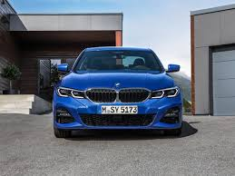

BMW G2x
The seventh-generation 3 Series (2020 - Present)

Car Specifications
- Engine Options: 2.0L Inline-4, 3.0L Inline-6, Plug-in Hybrid
- Power: 181 - 503 hp
- Torque: 280 - 650 Nm
- Transmission: 8-speed automatic, 7-speed DCT
- Top Speed: 250 km/h (155 mph)
- 0-100 km/h: 3.5 seconds (M3)
- Fuel Economy: 5.1 - 9.5 L/100 km (46 - 30 mpg)
- Production Years: 2020 - Present
- Body Style: 2-door Coupe, 4-door Sedan, Touring (Wagon)
- Drive Type: Rear-Wheel Drive, All-Wheel Drive (xDrive models)
- Weight: 1,400 - 1,700 kg
About the BMW G2x
The BMW G2x series marks a bold step forward in the evolution of the 3 Series. Featuring more advanced technology, hybrid options, and refined design, it combines performance and luxury with sustainability.
The G2x also includes significant improvements in interior design, connectivity, and driving dynamics, ensuring that it delivers an exciting and eco-conscious driving experience.
Image Gallery


Key Features
- Performance: Powerful engine options, including the high-performance M3 variant.
- Design: A refined, modern design with an emphasis on aerodynamics and luxury.
- Technology: Advanced iDrive, digital cockpit, and semi-autonomous driving features.
Technical Information
The BMW G2x series features new engines and technical advancements:
Engine Codes and Iterations
- B48: 2.0L Inline-4, turbocharged, used in 320i, 330i.
- B58: 3.0L Inline-6, turbocharged, used in 340i, 540i.
- S58: 3.0L Inline-6, twin-turbo, used in the M3, up to 503 hp.
Conclusion
The BMW G2x series represents the future of the 3 Series, combining tradition with cutting-edge technology and performance. It offers a perfect balance between efficiency, power, and luxury for modern drivers.